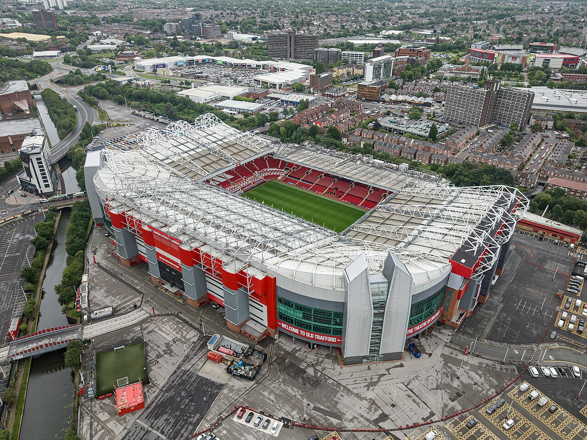

Home
The Theatre
History
Honours
References
Sources & Credits

https://www.manutd.com/en/club/history
https://en.wikipedia.org/wiki/Manchester_United_F.C._records_and_statistics
https://www.premierleague.com/clubs/12/Manchester-United/overview
https://en.wikipedia.org/wiki/Old_Trafford